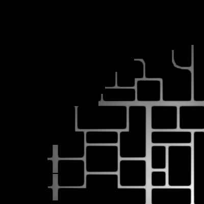

Extra cost caused by the obstacles
The first thing I did was to create a cost map with the extra cost caused by the walls. The algorithm is the following:
- Iterate through all points without a wall
- Check if at least one of his neighbors is a wall.
- If this is true, sum some cost to the point
- Do this taking neighbors at different depths
Wave Front Algorithm
The algorithm that I used is the following:
- Pop a node from a fifo queue
- If it is the start node, set the done flag to True
- Take its neighbors
- Iterate over them. Calculate the cost for each one. If it does not have any value yet, or if the calculated cost is lower, assign it to the node and push it to the queue.
Combining both cost maps
In order to obtain the total cost map, the previous cost maps are added:
Controlling the car
In order for the car to reach the goal, I did the following:
- I took the neighbor with the lower cost from all neighbors with a depth of 3
- I calculated a vector from the car node to that neighbor
- I calculated the angle difference between that vector and the positive x of the car base.
- I applied a proportional controller with that error to the linear and angular velocity.
Here is a video demonstration: